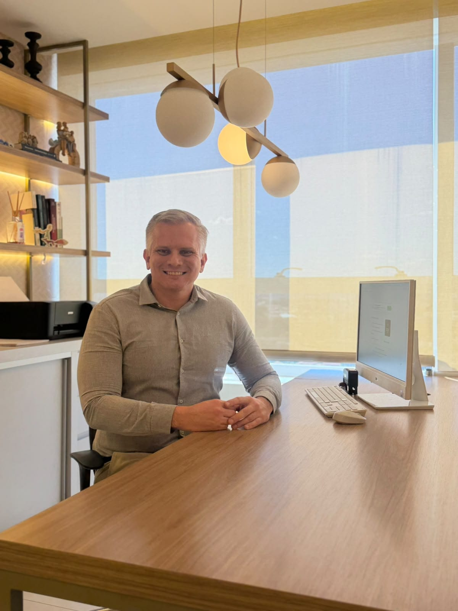
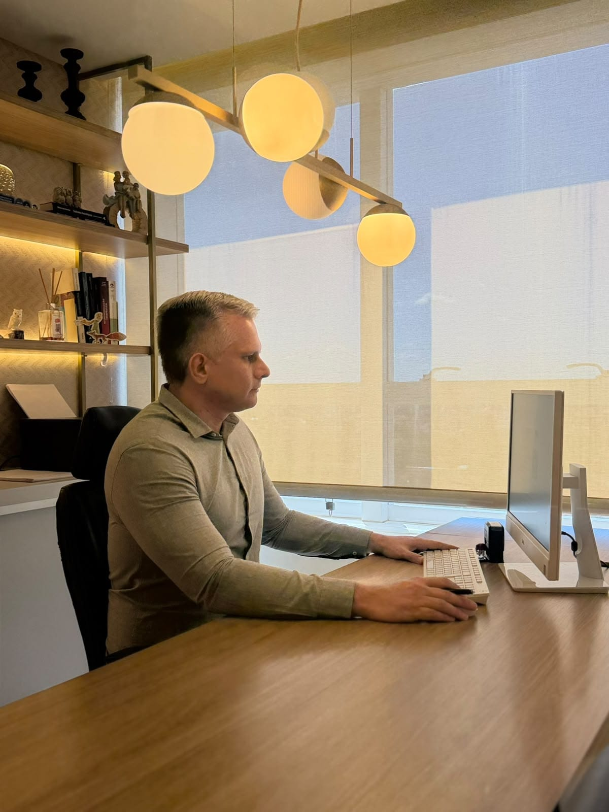

Um olhar atento e acolhedor para a saúde da mente
Acompanhamento dedicado para o desenvolvimento infantojuvenil e suporte em psiquiatria geral. Ajudo você e sua família a superarem desafios emocionais e comportamentais.

Especialidades
Autismo (TEA)
Avaliação e acompanhamento especializado focado no desenvolvimento, na comunicação e na autonomia do paciente
TDAH
Estratégias e tratamento voltados ao manejo da hiperatividade, ao ganho de foco e ao desempenho diário
TOD
Suporte especializado para o manejo da irritabilidade e dos comportamentos desafiadores no convívio diário
Ansiedade
Diagnóstico e tratamento para o alívio de preocupações excessivas e desconfortos físicos do dia a dia
Depressão
Cuidado humanizado e individualizado para a recuperação da energia, da motivação e da qualidade de vida
TOC
Intervenção focada na redução de pensamentos obsessivos e comportamentos repetitivos, resgatando a leveza
Fobia Social
Acompanhamento focado no fortalecimento da confiança e na superação do medo excessivo de interação social
TAB
Acompanhamento para a estabilização do humor, reduzindo oscilações intensas e devolvendo a previsibilidade
Formação
Sólida base acadêmica e aprimoramento científico contínuo para oferecer diagnósticos precisos, tratamentos seguros e um acompanhamento de excelência
Graduação
Faculdade de medicina da Universidade Federal do Pará. Experiência de 15 anos de formado
Especialização
Residência médica em psiquiatria pela Universidade Estadual de Maringá e em psiquiatria da infância e adolescência pelo CHC-UFPR
Título de Especialista
Título de Especialista em Psiquiatria RQE 20033 e Título de Especialista em Psiquiatria da Infância e Adolescência RQE 20034

Atuação
A atuação médica na saúde mental exige um olhar atento e individualizado, combinando o rigor científico da psiquiatria moderna a uma escuta verdadeiramente humanizada. O objetivo do atendimento é compreender a realidade e as necessidades de cada paciente, construindo um ambiente de confiança e segurança para crianças, adolescentes e adultos.
Através de diagnósticos precisos e planos terapêuticos personalizados, o acompanhamento busca não apenas o alívio dos sintomas, mas o fortalecimento da autonomia e do bem-estar. O trabalho é pautado pela parceria constante com as famílias e, quando necessário, pela integração com escolas e outros profissionais de saúde.
Experiência
Experiência no atendimento psiquiátrico de crianças, adolescentes e adultos, incluindo a avaliação e o acompanhamento de casos complexos.
Na infância e adolescência, atua especialmente nos transtornos do neurodesenvolvimento, como Transtorno do Espectro Autista, Transtorno de Déficit de Atenção e Hiperatividade e deficiência intelectual, além de transtornos de ansiedade, depressão e alterações comportamentais, como agressividade, impulsividade e comportamentos disruptivos.
No atendimento de adultos, possui experiência na investigação de diagnósticos tardios de transtornos do neurodesenvolvimento e no tratamento de ansiedade, depressão, transtorno afetivo bipolar, transtorno obsessivo-compulsivo, transtornos psicóticos, uso problemático de álcool e outras substâncias, bem como dependências comportamentais, incluindo o transtorno do jogo e a adição em apostas.
Agende um atendimento fundamentado em anos de dedicação
Depoimentos

A atenção e a forma como Dr. Ronaldo cuida de seus pacientes é inexplicável, desde a chegada no consultório até a saída somos tão bem recepcionados e assistidos que não temos nem vontade de ir embora. Sua explicação clara, seu diagnóstico preciso e o conhecimento tão amplo na área nos dão a certeza de que fizemos a escolha certa em tê-lo como médico, meu filho de 7 anos evoluiu com apenas 1 mês de tratamento. Espero que outras mães possam ter a oportunidade de levarem seus filhos, e assim como eu sair não só feliz mas também com a certeza de uma escolha bem feita.
Dr., gostaria de expressar minha profunda gratidão pelo atendimento excepcional que recebi. Sua competência médica e sua forma humanizada e atenciosa de lidar com os pacientes, profissional dedicado à saúde e ao bem-estar das pessoas.
Excelente profissional! Muito atencioso durante a consulta, valoriza cada detalhe! Os pais se sentem muito bem acolhidos! Recomendo!
Excelente especialista! Além de atencioso é criterioso e tem muito conhecimento de causa. Diagnóstico muito acertado.
Agradeço Dr. Ronaldo por seu conhecimento e atenção.
Tenho TAB e estava em crise de hipomania, mas com sua ajuda, rapidamente conseguimos reverter minha condição e estou muito bem.
Que Deus abençoe seu trabalho Dr. Ronaldo para que possa ajudar muitas outras pessoas!
Obrigada☺️